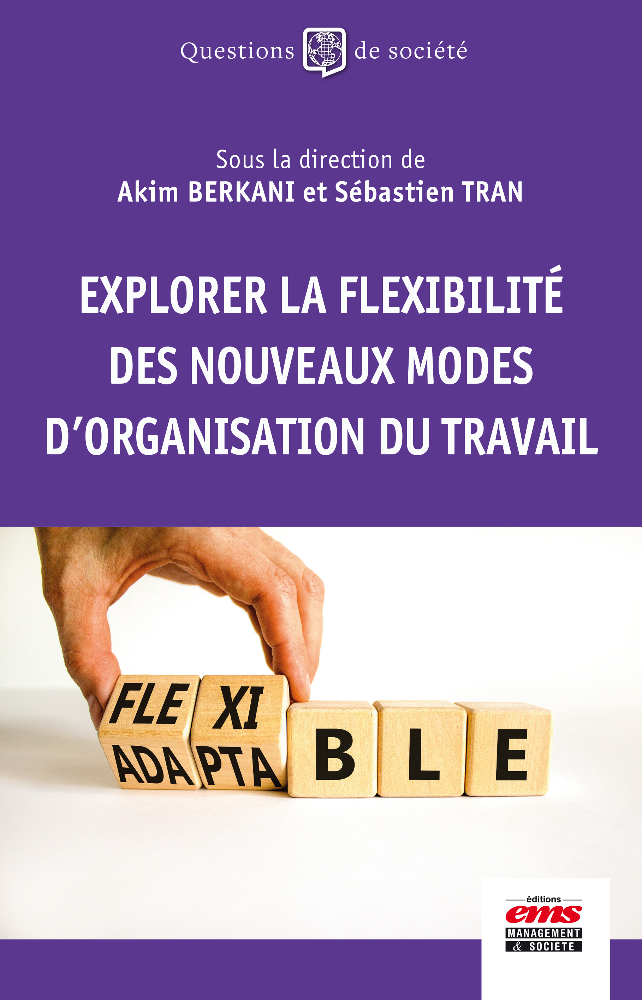

Portrait
Qui est Sébastien Tran
Sébastien Tran est Directeur Général d'Audencia Business School (fondée en 1900, triple accréditée EQUIS, AACSB et AMBA), l'une des grandes écoles de management européennes, présente à Nantes, Paris, La Roche-sur-Yon, Barcelone, Shenzhen, Shanghai, Chengdu et São Paulo. Il est titulaire d'un doctorat en Organisation Industrielle de l'Université Paris Dauphine (EQUIS) et d'une Habilitation à Diriger des Recherches (HDR) en sciences de gestion de l'Université de Rouen.
Fort de plus de vingt ans d'expérience dans la direction d'établissements d'enseignement supérieur, il a publié de nombreux travaux sur le management de l'innovation, la stratégie et les systèmes d'information. Ses recherches actuelles portent sur l'innovation managériale, l'avenir du travail, l'intelligence artificielle et l'entrepreneuriat. Il pilote aujourd'hui le développement stratégique d'Audencia à travers le plan STOA 2030.
Parcours
Carrière
- 2024 — aujourd'huiDirecteur Général — Audencia Business SchoolNantes / Paris, France · EQUIS / AACSB / AMBA
- 2022 — 2023Directeur Général — De Vinci Higher EducationParis, France
- 2019 — 2022Directeur Adjoint — De Vinci Higher EducationParis, France
- 2017 — 2024Doyen — EMLV Paris La DéfenseParis, France · AACSB / EFMD / AMBA
- 2014 — 2017Doyen Associé — ISC ParisParis, France · AACSB / AMBA
- 2010 — 2014Doyen du corps professoral — EM NormandieCaen / Le Havre / Paris / Oxford / Dublin · EQUIS / AACSB / AMBA
- 2006 — 2010Directeur des Affaires Académiques — ExceliaLa Rochelle, France · EQUIS / AACSB / AMBA
Recherche académique
Publications sélectionnées
- Guyottot, Couston & Tran (2024). The impact of coopetition on student recruitment in Higher Education: a study of French business schools' admission strategy. Higher Education Quarterly
- Loux, Tran & Aubry (2021). L'impact de la dématérialisation des contrats de travaux publics. Politiques & Management Public, 38(3)
- Favre-Bonté, Arreola & Tran (2021). A new kind of strategic factor market to access strategic resources. M@n@gement, 24(3) — CNRS 2 / FNEGE 2
- Loux, Aubry, Tran & Baudoin (2020). Multi-sided platforms in B2B contexts. Industrial Marketing Management, 84 — CNRS 2 / FNEGE 2
- Canet & Tran (2017). Quel est le rôle du substrat technique dans l'appropriation d'une innovation managériale. Management International — CNRS 3 / FNEGE 2
- Tran & Bertin (2015). Changing organizational models of IT departments as a result of cloud computing. Systèmes d'Information et Management, 20(4) — CNRS 2 / FNEGE 2
- Tran (2007). TIC et jeu concurrentiel : le cas des places de marché électroniques. Revue Française de Gestion, 33(173) — CNRS 3 / FNEGE 2
Prises de parole
Interviews vidéo
9 interviews
-
STOA 2030 : Sébastien Tran présente le nouveau plan stratégique d'AudenciaDG sur Écoute — Thotis
-
Former des dirigeants, mais pour quel monde ?L'Express Éducation Média
-
Le plan stratégique le plus ambitieux de la décennie — BIG BOSS Ep.13Planète Grandes Écoles
Parution
Ouvrage

Domaines de recherche
Compétences clés
- Direction de programmesAccréditations, développement curriculaire, pédagogies innovantes
- Direction académiqueRecrutement, gestion des charges, politique d'incitation
- Accréditations & qualitéAACSB, EQUIS, EFMD, ISO 9001, labels d'État
- Pilotage de la rechercheOrganisation de laboratoires, budgets, contrats industriels
- Développement internationalRecrutement étudiant, doubles diplômes, implantations
- Communication institutionnelleWeb TV, salons, relations presse
Formation
- 2013HDR — Sciences de GestionUniversité de Rouen
- 2003Doctorat — Organisation IndustrielleUniversité Paris Dauphine (EQUIS)
- 2000Master — Organisation & InnovationUniversité Paris Dauphine (EQUIS)
- 1999BBA — Management & FinanceUniversité de Reims (major de promotion)
Présence média
Tribunes & presse
Prises de parole dans les médias
- sept. 2026Askip, Audencia est l'école à ne pas rater pour rejoindre l'Ivy League ?Éducationle Monde des Grandes Écoles
- sept. 2026Éducation
- sept. 2026IA
- sept. 2026Bac+5, mais déclassés : la génération oubliée de la présidentielleÉducationLe Figaro Étudiant
- juil. 2026IA
- juil. 2026Le sujet reste important pour les jeunesTransition écologiqueL'Hémicycle
- juil. 2026IA
- juin 2026The skills you need to use AI effectivelyIAAMBA Insights
- mai 2026International
- mars 2026IA
- mars 2026IA
- févr. 2026The Attention Economy's Challenge: How Business Schools Must Address the Cognitive CrisisÉducationGlobal Focus
- déc. 2025AI4ALL : l'expérience innovante d'AudenciaIAGrand Angle de la CGE
- mars 2025La clé pour maîtriser l'IA : savoir combiner « intelligemment » les plateformesIAManagement & Data Science
- janv. 2025La réélection de Donald Trump peut être une opportunité pour les écoles de commerce françaisesÉducationLe Figaro Étudiant
- juil. 2024La guerre des IA aura-t-elle lieu ?IAHBR France
- oct. 2023Transition écologique
- sept. 2023Former aux enjeux de la transition dans l'enseignement supérieurTransition écologiqueLes Échos
- mai 2023Éducation
- mars 2023L'ultra-flexibilité en entreprise, une attente de plus en plus forte chez les jeunes diplômésRH & ManagementThe Conversation France
- janv. 2023Éducation
- déc. 2022RH & Management
- déc. 2022Éducation
- août 2022Comment les DRH se représentent le travail de demain ?RH & ManagementThe Conversation France
- juil. 2021RH & Management
- janv. 2021Les accélérateurs d'entreprise, un levier pour capter des ressources stratégiquesInnovationThe Conversation France
- nov. 2020Transformation digitale : le management de portefeuille de projets devient incontournable en entrepriseRH & ManagementThe Conversation France
- janv. 2020Hyperconnexion en classe : la bataille n'est pas perdueÉducationThe Conversation France
- mai 2019Innovation
- juin 2018Intelligence Artificielle : vers une destruction créatrice d'emploisIAThe Conversation France
L'institution
Audencia Business School
Fondée en 1900, Audencia figure parmi les meilleures écoles de management européennes, régulièrement classée dans le haut du classement mondial du Financial Times. Audencia est accréditée EQUIS, AACSB et AMBA, rejoignant ainsi le très petit nombre d'écoles au monde détentrices de cette « triple couronne ». Ses campus sont situés à Nantes, Paris, La Roche-sur-Yon, Barcelone, Shanghai, Shenzhen, Chengdu et São Paulo.
Première grande école française signataire du Global Compact des Nations Unies et de ses Principes pour une Éducation au Management Responsable, Audencia forme depuis longtemps les managers et entrepreneurs responsables de demain. L'école propose des programmes en management et communication du bachelor au doctorat, avec des accords signés avec 280 institutions académiques internationales et plus de 180 entreprises nationales et internationales. Audencia compte plus de 8 800 étudiants, près de 180 enseignants-chercheurs et un réseau de plus de 47 000 alumni.
Visiter audencia.com →